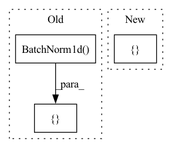

Pattern ID :15868
Before Change
block += batch_norm * [nn.BatchNorm1d(output_size)] + [activation]
block += [spectral_norm(nn.Linear(input_size, output_size)) if spect_norm else
nn.Linear(input_size, output_size)]
block += batch_norm * [ nn.BatchNorm1d( output_size) ]
self.shortcut = nn.Sequential(*shortcut)
self.block = nn.Sequential(*block)After Change
block = [spectral_norm(nn.Linear(input_size, output_size)) if spect_norm else
nn.Linear(input_size, output_size)]
if norm:
block += [ norm(output_size)In pattern: SUPERPATTERN
Frequency: 3
Non-data size: 3
Instances Fragment ID: 53648178
Project Name: lliutianc/gan-flow
Commit Name: 557b24a34e52ec01ad8d8e2c2b4a130f22762327
Time: 2020-06-01
Author: lliuitanc@gmail.com
File Name: residualblock.py
M Class Name: ResidualBlock
N Class Name: ResidualBlock
M Method Name: __init__(6)
N Method Name: __init__(6)
M Parent Class: nn.Module
N Parent Class: nn.Module
M File Name: residualblock.py
N File Name: residualblock.py
M Start Line: 12
M End Line: 21
N Start Line: 12
N End Line: 28
Before Change
self.forecast_length = forecast_length
self.share_thetas = share_thetas
fc_stack = [
nn.BatchNorm1d( backcast_length) ,
nn.Linear(backcast_length, units),
nn.ReLU(),
nn.BatchNorm1d(units),
nn.Dropout(dropout)After Change
nn.ReLU(),
]
for _ in range(num_block_layers - 1):
fc_stack.extend([ linear(units, units, dropout=dropout), nn.ReLU() Fragment ID: 53648182
Project Name: jdb78/pytorch-forecasting
Commit Name: 5182d5d5fc2fb767a885766c665bdc540145a6af
Time: 2020-07-15
Author: beitner.jan@bcg.com
File Name: pytorch_forecasting/models/nbeats/sub_modules.py
M Class Name: NBEATSBlock
N Class Name: NBEATSBlock
M Method Name: __init__(8)
N Method Name: __init__(8)
M Parent Class: nn.Module
N Parent Class: nn.Module
M File Name: pytorch_forecasting/models/nbeats/sub_modules.py
N File Name: pytorch_forecasting/models/nbeats/sub_modules.py
M Start Line: 35
M End Line: 44
N Start Line: 49
N End Line: 54
Before Change
)
linear = [ nn.Linear(ndf*8*4*4+b_int_digits+b_dec_digits, 512),
nn.BatchNorm1d( 512) ,
nn.ReLU(),
nn.Linear(512,1)After Change
// nn.Linear(512,1)]
// linear = [nn.Linear(ndf*8*4*4+b_int_digits+b_dec_digits, 1)]
linear = [ nn.Linear(ndf*8*4*4+1, 1) Fragment ID: 53648172
Project Name: ubcdingxin/improved_ccgan
Commit Name: f0f720e3f97c0d41a8ade33311fd8efe3f6b38c9
Time: 2020-03-01
Author: dingx92@gmail.com
File Name: CellCounting/models/cond_cnn_generator_discriminator.py
M Class Name: cond_cnn_discriminator
N Class Name: cond_cnn_discriminator
M Method Name: __init__(8)
N Method Name: __init__(8)
M Parent Class: nn.Module
N Parent Class: nn.Module
M File Name: CellCounting/models/cond_cnn_generator_discriminator.py
N File Name: CellCounting/models/cond_cnn_generator_discriminator.py
M Start Line: 169
M End Line: 172
N Start Line: 178
N End Line: 178